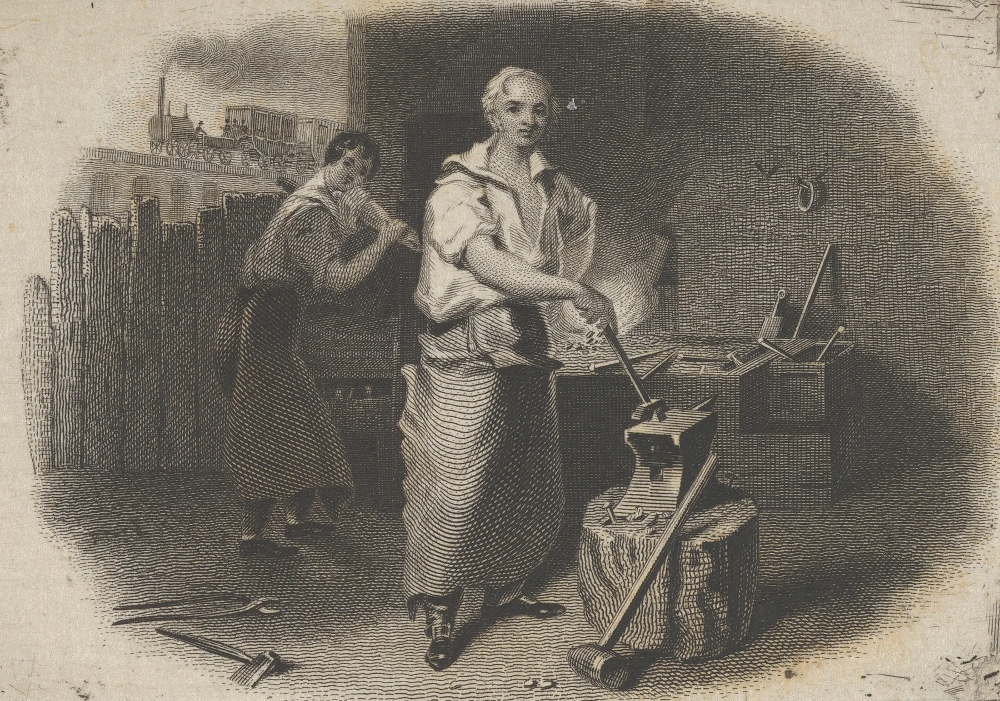

A chisel straight out of the quench is as hard as steel gets and nearly as brittle as glass, so it is let down: warmed again, gently, to somewhere between two and three hundred degrees. The smith has no thermometer for this. He rubs one face bright on a stone, puts the heat in, and watches. As the steel warms it takes a skin of oxide, and the skin shows as colour, running ahead of the heat: pale straw, straw, brown, a bronzy purple, blue.
The colours are not a stain. The film is a few tens of millionths of a millimetre thick, thinner than a wavelength of light, and the colour is interference between the light reflected from the top of the film and from the steel beneath it. It only ever thickens. Grind the face and it is gone; leave it, and it keeps the record of where the heat has been.

Asher Durand engraved this smith for the corner of a banknote, a little over three inches across. Vignettes like it were cut in soft steel and then hardened and tempered, so that the picture could be rolled into printing plates hundreds of times without wearing. Too hard, and the die cracks under the roller; too soft, and it spreads. The colour on its face told the man hardening it where to stop the heat. The frame round it was run the same way, from one corner, until the straw had gone a little under halfway.
Each colour has its trades. Pale straw, a little over two hundred degrees, is left on razors and engravers, which must hold the finest edge and are never struck. Darker straws and browns go to chisels and punches, purple to axes, and blue, near three hundred degrees, to springs and saws, which must bend and come back.
The temper chartOne page, the colours with their heats and trades
temper-chart.pdfPreparing
Draft: On letting downLast edited three days ago